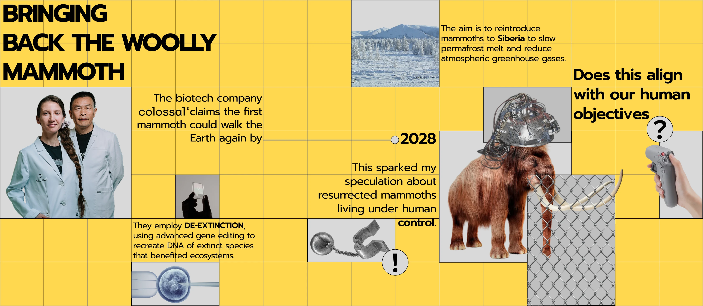

01 VISUAL STUDY
Bringing Back the Woolly Mammoth
围绕“去灭绝技术”与人类控制自然的议题展开的视觉研究海报，通过时间线、拼贴图像与批判性提问，探讨复活猛犸是否真正服务于生态目标，还是延续了人类中心主义的技术想象。

LAB / EXPERIMENTS
01 VISUAL STUDY
围绕“去灭绝技术”与人类控制自然的议题展开的视觉研究海报，通过时间线、拼贴图像与批判性提问，探讨复活猛犸是否真正服务于生态目标，还是延续了人类中心主义的技术想象。
